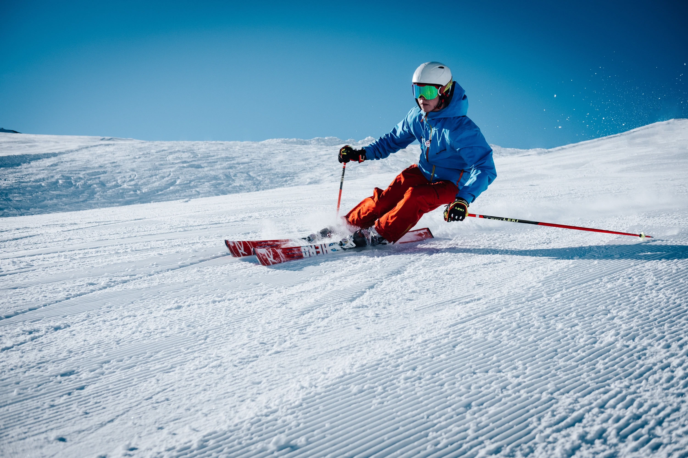
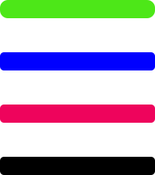

Zermatt

157 km pist
59 liftar
0 km
40 km
105 km
12 km

Sök resa
Det stora skidområdet "Tignes - Val d'Isère Ski Area" bjuder på Frankrikes kanske bästa skidåkning och något för varje smak. Inte minst finns det fantastiska möjligheter till bra offpist-åkning. Allt detta binds samman av ett supermodernt och effektivt liftsystem som alltid är inom gångavstånd. Njut av skidresor till Tignes fantastiska skidområde Skidområdet är format som en imponerande amfiteater, där utsikten är enastående från alla vinklar. Tignes är förbundet med grannbyn Val d'Isere, vilket ger hela 300 pistkilometer på ett och samma liftkort, oavsett vilken av byarna du reser till. Ett tvådelat skidområde Tignes skidområde är uppdelat i två delar: huvudbyn Tignes Le Lac och satellitbyn Tignes Val Claret. De två områdena på var sin sida av en liten sjö är förbundna med gratis shuttle-bussar. Avståndet är inte längre än ett par minuter med bussen som kör i pendelfart fram och tillbaka. Huvudliften utgår mitt i från centrala Tignes Le Lac och vid detta torg hittar man också ett stort sportcenter, badland, liftkontor och mycket mer. Glaciärskidåkning i Tignes Tignes Val Claret ligger på 2 100 meters höjd vid foten av Grand Motte glaciären, där du med den moderna Funiculaire-liften snabbt tar dig upp mot tunnare luft. Skidområdet bjuder på fantastisk skidåkning med enastående offpist-möjligheter. Dessutom är utsikten förbluffande vacker! Ta en grym offpist-repa från toppen när det kommit nysnö eller varva lång skön åkning med röda och svarta backar ner till byn, på en skidresor i Tignes finns mycket att välja på!
Skidresor till Bad Gastein innebär en av Europas högsta fallhöjder. Området sträcker sig från 1100 m.ö.h till 2700 och här finns skidåkning för alla; från nybörjare till riktigt fina offpist-möjligheter och härliga carvinglöpor. Här bjuds på natursköna omgivningar i nationalparken Hohe Tauern och över 200 kilometer pist. Skulle det inte räcka till ger liftkortet Ski Amadé över 860 kilometer pist och inkluderar även byarna Wagrain, Sankt Johan och Marie Alm. Under de senaste åren har man investerat miljoner i nya liftar och backar, därför är systemet hypermodernt och lättframkomligt. Gasteindalen är 40 kilometer lång och inkluderar fem självständiga skidområden, där de mest populära är Bad Gastein, Dorf Gastein och Sport Gastein.
Breuil-Cervinia ligger stolt beläget på över 2 000 meters höjd alldeles intill Matterhorn (Monte Cervino) och utgör hjärtat i Aostadalen. Med sin närhet till Zermatt i Schweiz och tillgången på snö är Cervinia en av Europas mest klassiska och imponerande skidorter. Cervinia ligger vid foten av det 4 478 meter höga berget Matterhorn, också känt som "Toblerone berget." Skidområdet erbjuder 132 kilometer pist som är inkluderat i priset och vill du ha ännu mer skidåkning kan du udvidga ditt liftkort med ytterligare 202 kilometer i det stora Zermatt-området i Schweiz. Huvuddelen av nedfarterna i Cervinia är för medelgoda åkare. Pistlängderna är imponerande med hela 22 kilometer som längsta nedfart. Möjligheterna till offpist och heli-skiing för både erfarna åkare och nybörjare är fantastiska i Cervinia. Cervinias höga läge och högsta åkhöjd på 3 889 meter över havet ger bra snögaranti. Skidsäsongen sträcker sig från december till maj.